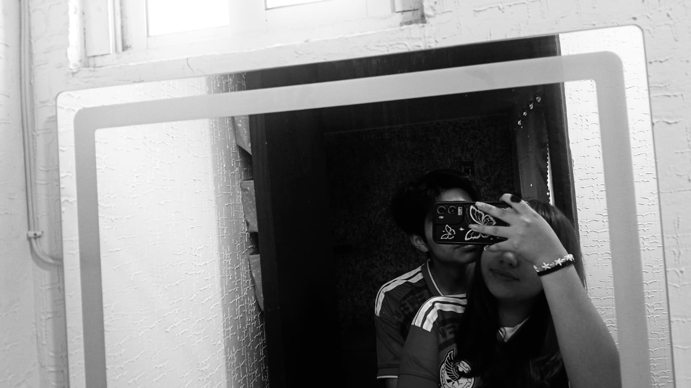

Una pequeña carta para alguien muy especial
Feliz cumpleaños,
bonita.
Hoy no quería dejar pasar el día sin decirte algo que quizá no digo lo suficiente: deseo de corazón que la vida te trate bonito.
leer la carta ↓Para ti, en este día especial
Hay cosas que merecen ser dichas.
Hoy es tu cumpleaños y, aunque las cosas entre nosotros hayan cambiado, hay algo que no quiero que cambie: mis ganas de verte bien. Por eso hice esta pequeña página. No para complicar las cosas, ni para pedirte nada, sino simplemente para regalarte unas palabras que salen sinceramente de mí.
Hemos compartido momentos que, por más que pase el tiempo, siguen teniendo un lugar especial en mi memoria. Hay recuerdos que aparecen de repente, una canción, una foto, un lugar, una conversación... y por unos segundos vuelvo a sentir esa tranquilidad de cuando estábamos juntos.
Sé que no todo fue perfecto. Sé que tuvimos errores, momentos difíciles y cosas que quizá pudimos hacer diferente. Pero también sé que hubo momentos verdaderamente bonitos, y no quiero recordar nuestra historia solamente por cómo terminó. Prefiero quedarme con todo lo bueno que aprendí contigo y con la enorme gratitud de haberte conocido.
Y sí, todavía te quiero. No voy a fingir que no. Pero querer a alguien también significa aprender a desearle felicidad aunque la vida tome caminos distintos. No sé qué nos depare el futuro, ni pretendo escribirlo por ti. Lo único que puedo decirte es que siempre voy a desear que encuentres personas, lugares y momentos que te hagan sentir querida, tranquila y feliz.
Espero que este nuevo año de tu vida venga lleno de oportunidades, de risas que te duelan en la cara, de metas cumplidas, de aventuras inesperadas y de noches en las que puedas acostarte pensando: “qué bonito está siendo mi vida”.
También espero que nunca olvides lo mucho que vales. Que no permitas que un mal día, una mala persona o una mala etapa te haga pensar lo contrario. Tienes derecho a crecer, cambiar, equivocarte, volver a empezar y construir la vida que quieras.
Gracias por los recuerdos. Gracias por las risas. Gracias por los momentos en los que me hiciste sentir acompañado. Gracias incluso por las cosas difíciles, porque también de ellas aprendí. Una parte de quien soy hoy existe gracias a todo lo que vivimos.
Así que hoy, desde donde me toca estar, solamente quiero decirte: feliz cumpleaños. Ojalá sonrías muchísimo hoy. Ojalá te consientan, te abracen, comas algo rico y termines el día sabiendo que alguien, aunque sea a la distancia, está deseando genuinamente que te vaya increíble.
Nuestros recuerdos
Un momento, una historia.
Usa las flechas para cambiar de recuerdo. Cada foto tiene algo diferente que decir.

Hay momentos que se quedan.
Esta foto me recuerda que hubo una etapa en la que simplemente estar juntos hacía que cualquier lugar se sintiera especial. Tal vez para alguien más sea solamente una foto, pero para mí guarda una pequeña parte de una historia que nunca voy a considerar insignificante.